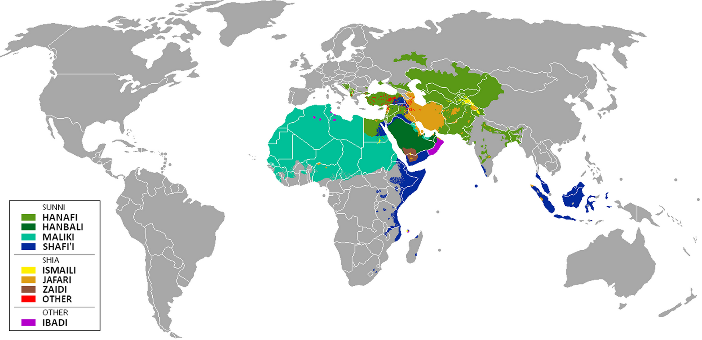

De la mort du prophète à la Guerre Iran-Irak
Le
sunnisme et le chiisme sont les deux principales branches de l'islam. Leur
séparation remonte en 632 après la mort du prophète Mahomet avec l'apparition
d'une dispute sur la succession du prophète Mahomet comme calife de la
communauté islamique. Une partie de la communauté soutenait Abou Bakr et Omar
comme les successeurs (sunnisme) et l'autre partie de la communauté soutenant
Ali comme successeur (chiisme). Une série de batailles ont eu lieu entre les
deux communautés comme les batailles de Karbala, Jamal ou Siffin. Après ces
batailles, la communauté chiite reste bien souvent cachée et discrète et est
régulièrement victime de violences. C'est en 1502 que le chiisme est fait
religion d'État en Perse par Ismaïl 1er de la dynastie des Séfévides. Cette
action de faire le Chiisme comme religion d'État était dans le but de se
démarquer des grands empires du monde arabe comme les Mamelouks ou les Ottomans.
Une politique de conversion violente est alors menée par la Shah Ismail 1er pour
convertir les musulmans sunnites au chiisme dans l'Empire perse. Avec cette
nouvelle dynastie des Safavid, de nombreux scientifiques et écrivains migrent
vers l'Empire perse et plus particulièrement en Iran. Cet apport d'intellectuels
en Iran a permis au développement du chiisme sur un point académique dans le
monde musulman. Jusqu'au milieu du XXe siècle, de nombreux conflits entre des
communautés chiites et sunnites ont lieu notamment en Inde avec le meurtre de
nombreux intellectuels chiites par des groupes sunnites ou la création du
wahhabisme en 1740 qui incitait la destruction des communautés, reliques et
monuments chiites.
Distribution des écoles de loi islamique
Peaceworld111, CC BY-SA 4.0, via Wikimedia Commons
Entre 1920 et 1970, les tensions entre chiites et sunnites baissent en intensité par la montée du nationalisme arabe et l'unité autour du peuple arabe et non de la religion. Une coopération entre sunnites et chiites se met en place avec par exemple le mouvement Califat en Inde, une union entre chiites et sunnites qui faisait pression sur le gouvernement britannique pour l'intérêt des musulmans. C'est avec la révolution islamique en Iran contre le Shah et l'arrivée de l'Ayatollah Khomeini au pouvoir iranien que les tensions entre sunnites et chiites s'accentuèrent et le début de la guerre Iran-Irak en 1980. Depuis cette guerre les tensions entre les deux branches principales de l'islam sont à leur apogée, notamment en Irak et au Pakistan avec des milliers de morts. Cette montée des tensions peut s'expliquer par l'invasion de l'Irak par les États-Unis qui engendra la perte de pouvoir des sunnites au Moyen-Orient. La lutte des régimes contre les révoltes des printemps arabes est aussi une des explications à ces tensions. Des groupes commencent à se créer comme le Hezbollah au Liban, qui est un parti politique chiite, voir la création du groupe terroriste et anti-chiite ISIL après l'invasion de l'Irak par les États-Unis. En savoir plus.
Manifestation anti-chiite par un groupe sunnite au Pakistan - source
La guerre Iran-Irak est une guerre qui a opposé l'Iran à l'Irak du 22 septembre 1980 au 20 aout 1988. Cette guerre qui peut être vue comme un combat entre l'Iran chiite et l'Irak sunnite est plus complexe que cela. Tout d'abord, l'Irak est a majorité chiite et le dirigeant, Saddam Hussein est sunnite et craint des révoltes de la part de la communauté chiite dans son pays à la suite de la révolution islamique en Iran par l'Ayathollah Khomeini. Saddam Hussein faisant partie du parti Baas, garde tout de même une affinité auprès des sunnites. Les pays occidentaux (français et américains) ayant peur de la montée en puissance de l'Iran, incite l'Irak à attaquer l'Iran en apportant une aide en fournissant des armes et des munitions. L'implication indirecte de la France et des États-Unis se ressent également dans la propagande médiatique qui a également nourri ce conflit. En analysant la plupart des médias et informations concernant la guerre Iran-Irak, la majorité de ces documents sont prit du côté des Irakiens, on peut par exemple retrouver de nombreux reportages sur les combats des troupes irakiennes contre Iraniens ou l'entrée de l'armée irakienne sur le territoire iranien.
Reportage de la guerre Iran-Irak par des journalistes suivant des troupes irakienne
La
guerre Iran-Irak devient donc une guerre médiatique et idéologique. Guerre
médiatique par la propagande utilisée par les deux camps et l'appel par chacun
des deux camps au rassemblement des chiites pour l'Iran contre les sunnites en
Irak et inversement. L'appel au rassemblement est pour créer un ennemi commun
entre l'ensemble de la communauté religieuse chiite et sunnite. L'ennemi commun
permet également de bénéficier de l'aide d'autres États ayant cet ennemi
également par exemple l'Arabie Saoudite qui a apporté son aide à l'Irak ayant
comme ennemi commun l'Iran et les chiites. L'implication des pays occidentaux
est importante, les États-Unis, la France, l'Allemagne et d'autres pays
financent massivement l'armée irakienne et fournissent des armes. L'Allemagne et
la France ont permis à l'Irak de se doter d'armes chimiques et biologiques qui
furent utilisées sur des militaires et civiles iraniens, mais également contre
le peuple kurde lors du massacre de Halabja, où uniquement un simple communiqué
de presse rappelant l'interdiction d'utilisation des armes chimiques fut déclaré
par les Nations Unies et les pays occidentaux.
Dans
des rapports de la Mehr new agency, agence d'information iranienne, et des mails
diffusés par WikiLeaks en provenance de l'entreprise Stratfor on peut lire qu'un
comité sur l'utilisation des armes chimiques et biologiques par l'Irak pendant
la guerre Iran-Irak a été réalisé dans le cadre de CWC (Chemical Weapons
Convention) par l'ONU. Les États-Unis étaient conviés à ce comité et à parler
sur le rôle du pays dans l'approvisionnement d'armes chimiques pour l'Irak,
cependant les États-Unis ont refusé participer à cette réunion. Des mails
montrent également l'implication de nombreuses entreprises pharmaceutiques
françaises et allemandes dans l'approvisionnement d'armes et données
scientifiques pour la création d'armes chimiques et biologiques pour
l'Irak.
created with
Website Builder Software .{kind=link}